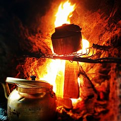

Glasswings' Signature Burnt Water Catastrophe

Description
Sometimes I don't plan ahead as well as I should and find myself needing a quick snack. Usually this works out well, but sometimes it doesn't. This dish requires an unusual combination of foresight and the ability to nevertheless put one's foot right in it.
Ingredients
- Canned pumpkin puree, approximately 15 ounce or 400 mL size.
- Maple syrup, 60 ml
- A good amount of pumpkin pie spice
- Forethought
- Good intentions
- One teakettle with sentimental value
- Cup instant noodles
Steps
- Begin by mixing the pumpkin, syrup, and spice.
- Spread the mixture thin on dehydrating trays and thoroughly dehydrate.
- Seal in serving-sized bags and keep in an airtight container.
- Stay up too late studying and/or hacking on something interesting.
- Realize, oops, you're hungry.
- Decide to make yourself a cup of instant noodles, and also some of that camping pumpkin pudding for variety.
- Heat water for instant noodles.
- Pour.
- Set timer for 3 minutes, wander off to look at that code one more time.
- Come back to timer.
- Enjoy noodles
- What's that smell?
- Oh... dang it. I was gonna make pudding from roughly equal parts hot water and dehydrated pumpkin pie filling.
- And I liked that kettle.
- 🥺